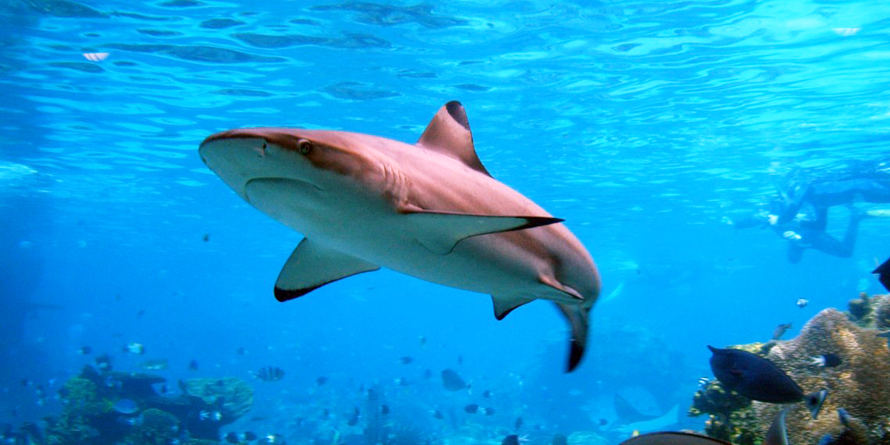
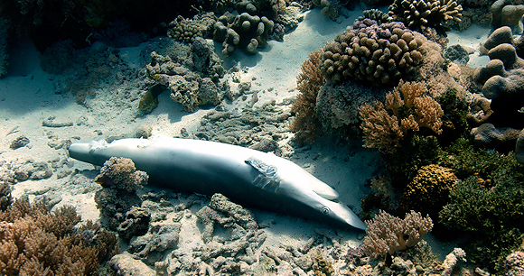

Sharks Reduce Carbon
Deep-sea sharks help recycle carbon and remove it from the equation by eating and scavenging dead animals on the bottom of the ocean.
Without these sharks, that carbon would rise to the surface.
It's estimated that sharks remove up to half of the
manufactured carbon in the atmosphere.
Source: Oceans Research

Sharks Advancing Human Medicine
Australian researchers have developed a drug that mimics part of a shark's
immune system to treat idiopathic pulmonary fibrosis (IPF).5
The drug, called AD-114, was inspired by an antibody found in shark blood,
specifically in the Wobbegong shark.
Source: Pharmacy Times

Say No to Shark Fin Soup and End Shark Finning!
Shark fin soup has been a Chinese delicacy for thousands of years. The dish has become
a symbol of wealth and served during special occasions. However, the dish has a cruel
backstory. Fisherman catch sharks to harvest their fins then dump them back into the ocean,
unable to swim and dying a slow cruel death. Not only is the practice cruel, it also can
severely impact our ecosystem.
Source: South Carolina Aquarium